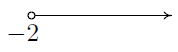

While we would like nothing more than to delve quickly and deeply into the sheer excitement that is Functions, experience has taught us that a brief refresher on some basic notions is welcome, if not completely necessary, at this stage. To that end, we present a brief summary of 'set theory' and some of the associated vocabulary and notations we use in the text. Like all good Math 'books', we begin with a definition.
Definition 00-1: A set is a well-defined collection of objects which are called the 'elements' of the set. Here, `well-defined' means that it is possible to determine if something belongs to the collection or not, without prejudice.
For example, the collection of letters that make up the word "coyote" is well-defined and is a set, but the collection of the worst pizza places in the world is not well-defined, and so is not a set. In general, there are three ways to describe sets. They are
In each of the above cases, we may use the familiar equals sign '$=$' and write $S = \{c,o,t,e,y\}$ or $S = \{x \; | \; x$ is a letter in the word "coyote"$\}$. Clearly $t$ is in $S$ and $q$ is not in $S$. Throughout your mathematical upbringing, you have encountered several famous sets of numbers. They are listed below.
It is important to note that every natural number is a whole number, which, in turn, is an integer. Each integer is a rational number (taking $b = 1$ in the above definition for $\mathbb{Q}$ produces integers) and the rational numbers are all real numbers, since they possess decimal representations. For the most part, we will focus on sets whose elements come from the real numbers $\mathbb{R}$.
Recall that we may visualize $\mathbb{R}$ as a line. Segments of this line are called intervals of numbers. Below is a summary of the so-called interval notation associated with given sets of numbers. For intervals with finite endpoints, we list the left endpoint, then the right endpoint. We use square brackets, `$[$' or `$]$', if the endpoint is included in the interval and use a filled-in or `closed' dot, $\bullet$, to indicate membership in the interval. Otherwise, we use parentheses, `$($' or `$)$' and an `open' circle, $\circ$, to indicate that the endpoint is not part of the set. If the interval does not have finite endpoints, we use the symbols $-\infty$ to indicate that the interval extends indefinitely to the left and $\infty$ to indicate that the interval extends indefinitely to the right. Since infinity is a concept, and not a number, we always use parentheses when using these symbols in interval notation, and use an appropriate arrow to indicate that the interval extends indefinitely in one (or both) directions.
We will usually abuse the notation when we are considering intervals as sets of numbers. Instead of using a complete form of set-builder notation, we will abbreviate to just the inequality: $x>2$ as a shortened from of $\{x \; |\; x>2\}.$ With this in mind, let $a$ and $b$ be real numbers with $a < b$.
| Set of Real Numbers | Interval Notation | Region on the Real Number Line |
| $a < x < b$. | $(a, b)$ | |
| $a \leq x < b$. | $[a, b)$ | |
| $a < x \leq b$. | $(a, b]$ | |
| $a \leq x \leq b$. | $[a, b]$ | |
| $x < b$. | $(-\infty,b)$ | |
| $x \leq b$. | $(-\infty,b]$ | |
| $a < x$. | $(a,\infty)$ | |
| $a \leq x$. | $[a,\infty)$ | |
| $a < x < b$. | $(a,b)$ | |
| All Real numbers, $\mathbb{R}$. | $(-\infty,\infty)$ | |
Note that we could write the inequality $1 < x < 3$ as $3 > x > 1$ and still have the same set. An easy way to remember which inequality symbol to use is that the smaller (closed) end points to the smaller number and conversely the larger end (open end) is next to the larger value. There is some evidence that the inequality sign started ont as a "distorted" equal sign with one end pinched together to denote the side with the smaller value. However it came about, the table below gives a few examples of the two notations.
| Set of Real Numbers | Interval Notation | Region on the Real Number Line |
| $1 \le x < 3$. | $[1, 3)$ |  |
| $4 \ge x \ge -1$. | $[-1, 4]$ |  |
| $x \le 5$. | $(-\infty, 5]$ |  |
| $x > -2$. | $(-2, \infty)$ |  |
We will often have occasion to combine sets. There are two basic ways to combine sets: intersection and union. We define both of these concepts below.
Definition 00-2: Suppose $A$ and $B$ are two sets. The intersection of $A$ and $B$: $A \cap B = \{ x \; | \; x \mbox{ is in } A \mbox{ and } x \mbox{ is in } B\}.$ The union of $A$ and $B$: $A \cup B = \{ x \; | \; x \mbox{ is in } A \mbox{ or } x \mbox{ is in } B \mbox{ (or both)}\}.$
Said differently, the intersection of two sets is the overlap of the two sets--the elements which the sets have in common. The union of two sets consists of the totality of the elements in each of the sets, collected together.| Set of Real Numbers | Interval Notation | Region on the Real Number Line |
| $x \leq -2$ or $x \geq 2$ | $(-\infty, -2] \cup [2, \infty)$ | |
| $x \neq 3$ | $(-\infty, 3) \cup (3, \infty)$ |
In order to visualize the pure excitement that is MAT-102, we need to unite Algebra and Geometry. Simply put, we must find a way to draw algebraic things. Let's start with possibly the greatest mathematical achievement of all time: the Cartesian Coordinate Plane. (Named in honor of the 17th century philosopher, mathematician and scientist, René Decartes.)
Imagine two real number lines crossing at a right angle at $0$ as drawn below.
The horizontal number line is usually called the $x$-axis while the vertical number line is usually called the y-axis. As with the usual number line, we imagine these axes extending off indefinitely in both directions. Having two number lines allows us to locate the positions of points off of the number lines as well as points on the lines themselves.
For example, consider the point $P$ shown below. To use the numbers on the axes to label this point, we imagine dropping a vertical line from the $x$-axis to $P$ and extending a horizontal line from the $y$-axis to $P$. This process is sometimes called `projecting' the point $P$ to the $x$- (respectively $y$-) axis. We then describe the point $P$ using the ordered pair $(2,-4).$ The first number in the ordered pair is the $x$-coordinate and the second is the $y$-coordinate. Taken together, the ordered pair $(2, -4)$ give the location of the point $P$ with respect to the $x$ and $y$ axes.

The axes divide the plane into four regions called quadrants. They are labeled Q1, Q2, Q3 and Q4 and proceed counterclockwise around the plane as shown in the graph below. Note that point $P$ is in quadrant 4 and $Q$ is in quadrant 2.

Before beginning the material in MAT-102, you should have be able to simplify basic mathematical expressions with variables and know how to solve an equation for a variable. Here are a few examples for your review.
World View Note: The word exponent comes from the Latin "expo" meaning out of and "ponere" meaning place. While there is some debate, it seems that the Babylonians living in Iraq were the first to do work with exponents (dating back to the 23rd century BC or earlier!)
| $a^3a^2$ | Expand exponents to multiplication problem |
| $(aaa)(aa)$ | Now we have $5$ $a$'s being multiplied together |
| $a^5$ | Our Solution |
A quicker method to arrive at our answer would have been to just add the exponents: $a^3 a^2=a^{3+2}=a^5$. This is known as the product rule of exponents:
The product rule of exponents can be used to simplify many problems. We will add the exponent on like variables. This is shown in the following examples:
| $3^2\cdot 3^6\cdot 3$ | Same base $(3)$, add the exponents $2+6+1$ |
| $3^9$ | Our Solution |
| $2x^3 y^5 z \cdot 5x y^2 z^3$ | Multiply $2\cdot 5$, add exponents on each of $x, y$ and $z$ |
| $10x^4 y^7 z^4$ | Our Solution |
Rather than multiplying, we will now try to divide with exponents.
| $\dfrac{a^5}{a^2}$ | Expand exponents |
| $\dfrac{aaaaa}{aa}$ | Divide out (cancel) two of the $a$'s in both the numerator and denominator ($\frac{a}{a} = 1$) |
| $aaa$ | Convert to exponents |
| $a^3$ | Our Solution |
A quicker method to arrive at the solution would have been to just subtract the exponents, $\dfrac{a^5}{ a^2} = a^{5-2}= a^3$. This is known as the quotient rule of exponents.
The quotient rule of exponents can similarly be used to simplify exponent problems by subtracting exponents on like variables. This is shown in the following examples:
| $\dfrac{7^{13}}{7^5}$ | Same base, subtract the exponents $13-5 = 8$ |
| $7^8$ | Our Solution |
| $\dfrac{5a^3 b^5 c^2}{2ab^3 c}$ | Subtract exponents on $a, b$ and $c$ |
| $\frac{5}{2} a^2 b^2 c$ | Our Solution |
A third property we will look at will have an exponent problem raised to a second exponent. This is investigated in the following example:
| $\left(a^2\right)^3$ | This means we have $a^2$ three times--expand |
| $a^2\cdot a^2 \cdot a^2$ | Add exponents |
| $a^6$ | Our solution |
A quicker method to arrive at the solution would have been to just multiply the exponents, $(a^2)^3 = a^{2\cdot 3} = a^6$. This is known as the power of a power rule of exponents
This property is often combined with two other properties which we will investigate now.
| $(ab)^3$ | This means we have $(ab)$ three times |
| $(ab)(ab)(ab)$ | The product of three $a$'s and three $b$'s can be written with exponents |
| $a^3 b^3$ | Our Solution |
A quicker method to arrive at the solution would have been to take the exponent of three and put it on each factor in parenthesis, $(ab)^3 = a^3b^3$. This is known as the power of a product rule of exponents:
It is important to be careful to only use the power of a product rule with multiplication inside parenthesis. This property does NOT work if there is addition or subtraction inside the parentheses.
Warning| $(a+b)^m\ne a^m+b^m$ | These are NOT equal if $m\ne 1$, beware of this error! |
Another property that is very similar to the power of a product rule is considered next.
| $\left(\frac{a}{b} \right)^3$ | This means we have the fraction three times |
| $\left(\frac{a}{b} \right) \left(\frac{a}{b} \right) \left(\frac{a}{b} \right)$ | Multiply fractions across the top and bottom, using exponents |
| $\dfrac{a^3}{b^3}$ | Our Solution |
A quicker method to arrive at the solution would have been to put the exponent on every factor in both the numerator and denominator, $\left(\frac{a}{b} \right)^3=\frac{a^3}{b^3}$. This is known as the power of a quotient rule of exponents:
The power of a power, product and quotient rules are often used together to simplify expressions. This is shown in the following examples:
| $(x^3y z^2)^4$ | Put the exponent of $4$ on each factor, multiplying powers |
| $x^{12} y^4 z^8$ | Our solution |
| $\left(\dfrac{a^3 b}{c^4 d^5} \right)^2$ | Put the exponent of 2 on each factor, multiplying powers |
| $\dfrac{a^6 b^2}{c^8d^{10}}$ | Our Solution |
As we multiply exponents its important to remember these properties apply to exponents, not bases. An expression such as $5^3$ does not mean we multiply $5$ by $3$, rather we multiply $5$ three times, $5 \cdot 5 \cdot 5 = 125$. This is shown in the next example.
| $(4x^2 y^5)^3$ | Put the exponent of $3$ on each factor, multiplying powers |
| $4^3 x^6 y^{15}$ | Evaluate $4^3=4\cdot 4\cdot 4$ |
| $64x^6 y^{15}$ | Our Solution |
In the previous example we did not put the $3$ on the $4$ and multiply to get $12$, this would have been incorrect. Never multiply a base by the exponent. These properties pertain to exponents only, not bases.
In this lesson we have discussed $5$ different exponent properties. These rules are summarized in the following table:
| Product Rule of Exponents | $a^m a^n=a^{m+n}$ |
| Quotient Rule of Exponents | $\frac{a^m}{a^n} =a^{m-n}$ |
| Power of a Power Rule of Exponents | $(a^m)^n=a^{mn}$ |
| Power of a Product Rule of Exponents | $(ab)^m=a^m b^m$ |
| Power of a Quotient Rule of Exponents | $\left(\frac{a}{b} \right)^m=\frac{a^m}{b^m}$ |
These five properties are often mixed up in the same problem. Often there is a bit of flexibility as to which property is used first. However, order of operations still applies to a problem. For this reason it is our suggestion to simplify inside any parentheses first, then simplify any exponents (using power rules), and finally simplify any multiplication or division (using product and quotient rules). This is illustrated in the next few examples:
| $(4x^3 y \cdot 5x^4 y^2)^3$ | In parenthesis simplify using Product Rule, add exponents |
| $(20x^7 y^3)^3$ | Apply the Power of a Product Rule, multiply exponents |
| $20^3 x^{21} y^9$ | Evaluate $20^3$ |
| $8000x^{21} y^9$ | Our Solution |
| $7a^3(2a^4)^3$ | Parenthesis are already simplified, next use Power Rule |
| $7a^3(8a^{12})$ | Using Product Rule, add exponents and multiply numbers |
| $56a^{15}$ | Our Solution |
| $\dfrac{(3a^3 b)(10a^4 b^3)}{2a^4 b^2}$ | Simplify numerator with Product Rule, adding exponents |
| $\dfrac{30a^7 b^4}{2a^4 b^2}$ | Now use the Quotient Rule, subtract exponents |
| $15a^3 b^2$ | Our Solution |
Clearly these problems can quickly become quite involved. Remember to follow order of operations as a guide, simplify inside parenthesis first, then power rules, then product and quotient rules.
There are a few special exponent properties that deal with exponents that are not positive. The first is considered in the following example, which is worked out 2 different ways:
| First Method | Second Method | ||
| $\dfrac{a^3}{a^3}$ | Use the Quotient Rule, subtract exponents | $\dfrac{a^3}{a^3}$ | Rewrite exponents as repeated multiplication |
| $a^0$ | Our Solution | $\dfrac{aaa}{aaa}$ | Cancel out all the $a$'s |
| | | $\frac{1}{1}=1$ | Our Solution |
| When we combine the two solutions we get: | |||
| | $a^0=1$ | Our Final Result | |
This final result is an important property known as the Zero Power Rule of Exponents:
Any number or expression raised to the zero power will always be $1$. This is illustrated in the following example.
| $(3x^2)^0$ | Apply the Zero Power Rule |
| $1$ | Our Solution |
Another property we will consider here deals with negative exponents. Again we will solve the following example two ways.
| First Method | Second Method | ||
| $\dfrac{a^3}{a^5}$ | Using the Quotient Rule, subtract exponents $3-5=-2$ | $\dfrac{a^3}{a^5}$ | Rewrite exponents as repeated multiplication |
| $a^{-2}$ | Our Solution | $\dfrac{aaa}{aaaaa}$ | Reduce three $a$'s out of top and bottom |
| | | $\dfrac{1}{aa}$ | Simplify to exponents |
| | | $\dfrac{1}{a^2}$ | Our Solution |
| When we combine the two solutions we get: | |||
| | $a^{-2}=\dfrac{1}{a^2}$ | Our Final Result | |
This example illustrates an important property of exponents. Negative exponents yield the reciprocal of the base. Once we take the reciprocal the exponent is now positive. Also, it is important to note a negative exponent does not mean the expression is negative, only that we need the reciprocal of the base. The next example simplifies a fraction raised to a negative exponent.
| $\left(\dfrac{5}{3} \right)^{-2}$ | Negative exponents yield the reciprocal of the base |
| $\left(\dfrac{3}{5} \right)^2$ | The reciprocal has a positive exponent, now power rule |
| $\dfrac{3^2}{5^2}$ | Evaluate |
| $\dfrac{9}{25}$ | Our Solution |
Following are the rules of negative exponents:
| Rules of Negative Exponents: | $a^{-m}=\dfrac{1}{a^m}$ $\dfrac{1}{a^{-m}}= a^m$ $\left( \dfrac{a}{b}\right)^{-m}=\dfrac{b^m}{a^m}$ |
Negative exponents can be combined in several different ways. As a general rule if we think of our expression as a fraction, bases with negative exponents in the numerator must be moved to the denominator with a positive exponent. Likewise, bases with negative exponents in the denominator need to be moved to the numerator. When the base with exponent moves, the exponent is now positive.
We now have the following nine properties of exponents. It is important that we are very familiar with all of them.
Properties of Exponents
| $a^m a^n=a^{m+n}$ | $(ab)^m=a^m b^m$ | $a^{-m}=\dfrac{1}{a^m}$ |
| $\frac{a^m}{a^n} =a^{m-n}$ | $\left(\frac{a}{b} \right)^m=\frac{a^m}{b^m}$ | $\dfrac{1}{a^{-m}}= a^m$ |
| $(a^m)^n=a^{mn}$ | $a^0=1$ | $\left( \dfrac{a}{b}\right)^{-m}=\dfrac{b^m}{a^m}$ |
World View Note: Nicolas Chuquet, the French mathematician of the 15th century wrote $12^{1\overline{m}}$ to indicate $12x^{-1}$. This was the first known use of the negative exponent.